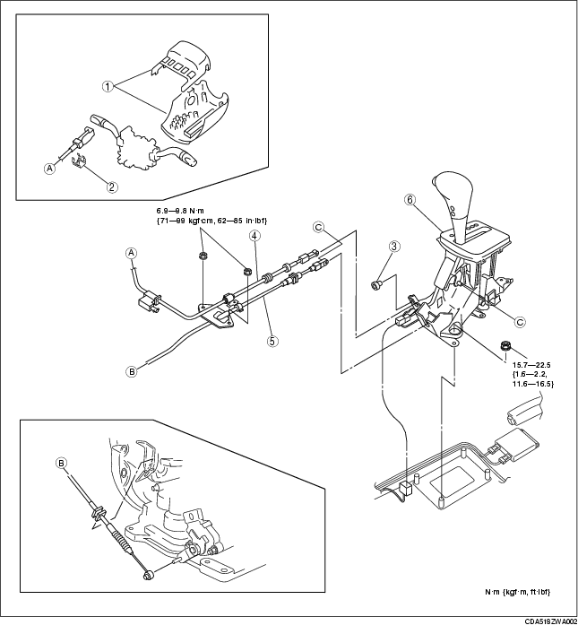
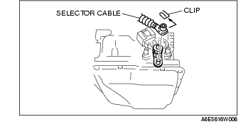
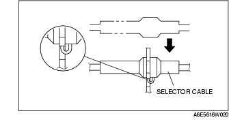
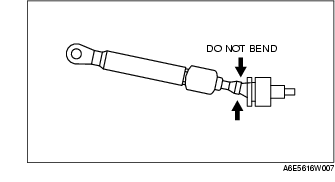
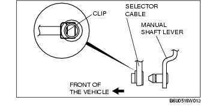
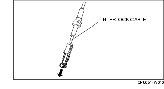
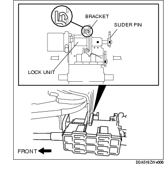
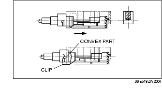

Selector lever removal/installation
1. Disconnect the negative battery cable.
2. Remove the battery, battery tray and battery tray bracket.
3. Remove the air cleaner cover. (See INTAKE-AIR SYSTEM REMOVAL/INSTALLATION [ZY].)
4. Remove the console.
5. Remove the rear heat duct. (See REAR HEAT DUCT REMOVAL/INSTALLATION.)
6. Remove the dashboard completely. (See DASHBOARD REMOVAL/INSTALLATION.)
7. Remove the A/C unit. (See A/C UNIT REMOVAL/INSTALLATION.)
8. Remove the wiring harness of the SAS control module.
9. Remove in the order shown in the figure.
10. Install in the reverse order of removal.

|
1
|
Column cover
|
|
2
|
Clip
|
|
3
|
Clip
|
|
4
|
Interlock cable
|
|
5
|
Selector cable
(See Selector Cable Removal Note.)
|
|
6
|
Selector lever
|
Selector Cable Removal Note
1. Remove the clip.
2. Remove the selector cable.

Selector Cable Installation Note
1. Install the selector cable to the selector lever securely.
2. Install the selector cable to the bracket securely.

3. Verify that the selector lever is in the P position.
4. Verify that the manual shaft is in the P position.
-
• Bending the selector cable in the manner shown in the figure will damage the cable and it may become loose when shifted. When installing the selector cable, hold it straight.

-
• Install the selector lever to the manual shaft lever with the clip side of the selector cable end facing the front of the vehicle.

5. Install the selector lever to the manual shaft lever in such a way that the selector cable does not bear a load.
6. Confirm that the end of the manual shift lever sticks out of the end of the selector cable.
7. Install the selector cable to the selector cable bracket securely.
8. Lock the lock piece of the selector cable (selector lever side) in the order shown in the figure.

Interlock Cable Installation Note
1. Push the interlock cable.

2. Push the snap pin (or a ø1.5 round bar or similar.) into hole A by fully pushing the slider pin in.

3. Fully pull the end of the interlock cable to the selector lever.

4. Push the snap pin into hole B and hole C of the lock unit until it passes through.

5. Disconnect the brake switch connector.
6. Remove the brake switch. (See BRAKE PEDAL REMOVAL/INSTALLATION.)
7. Install a new brake switch. (See BRAKE PEDAL REMOVAL/INSTALLATION.)
8. With the slider pin pressed, slide the lock unit to fix the lock unit hook into the bracket hole securely as shown in the figure.

- • Allowing the interlock cable to be bent or twisted during installation can affect the lock unit operation.
9. Rotate the slider pin to release the lock and verify that it slides freely.

10. Pull the slider pin outward until it contacts the brake pedal stopper rubber and rotate the slider pin to lock.
11. Verify that the selector lever in the P position.
12. Install the interlock cable end to the cam pin on the selector lever.

13. Fit the interlock cable in the U-groove in the selector lever base plate and install the clip.
14. Press the interlock cable lock piece in until it is locked.

- • Applying a load to the interlock cable while pressing the lock piece in can affect the lock unit operation.
15. Remove the snap pin from the lock unit holes A, B, and C.

16. Connect the brake switch connector with the brake pedal released.
- • The clearance between the brake switch and the brake pedal is automatically adjusted to the correct amount when the brake switch connector is connected after the brake switch has been properly installed. If the brake switch is not properly installed or the connector is connected before installation, the clearance may be incorrect, causing a brake light malfunction. Therefore, always verify that the brake switch is properly installed before connecting the connector.
- • Once the brake switch clearance has automatically been adjusted, it cannot be adjusted again. Therefore, replace the switch with a new one when replacing the power brake unit or the pedal, or performing any procedure that changes the pedal stroke.
17. Turn the ignition switch to ON position.
18. Install the interlock cable to the steering lock.
19. Slide the outer casing to the steering lock and insert the clip over the convex part of the outer casing.
